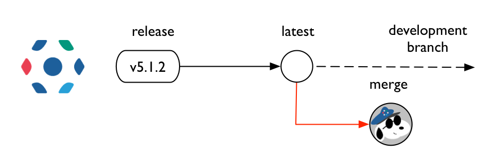
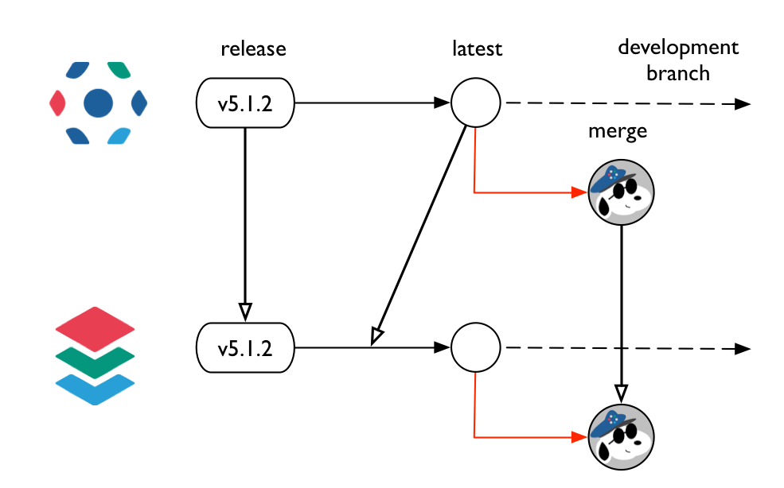
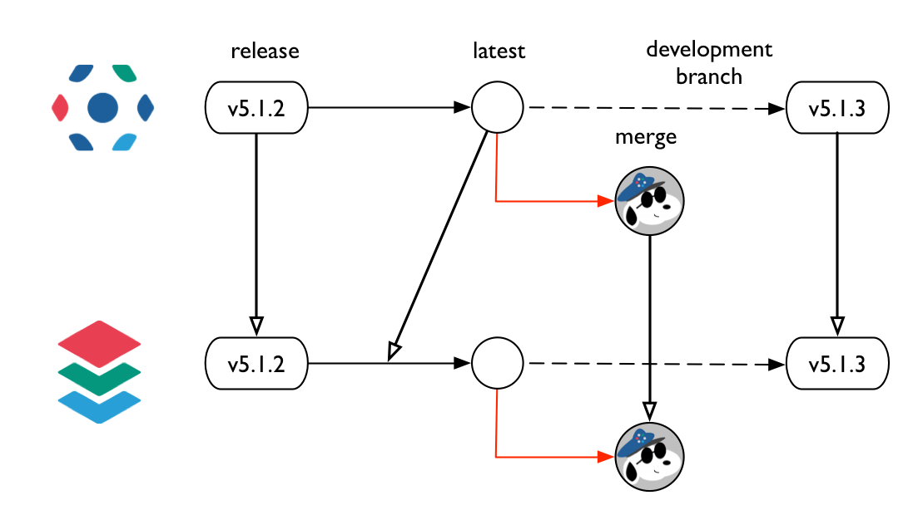
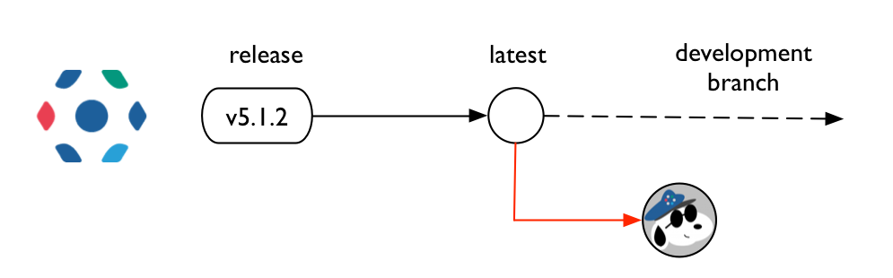
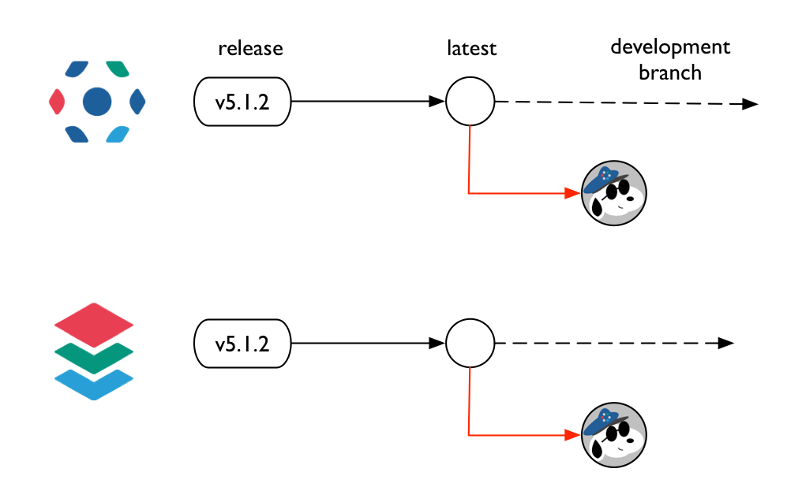
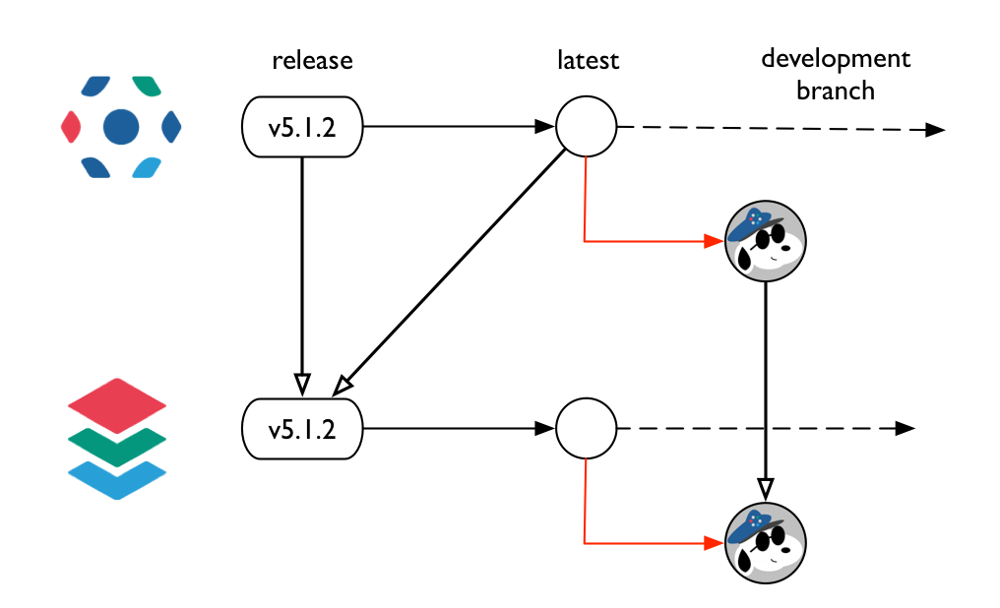
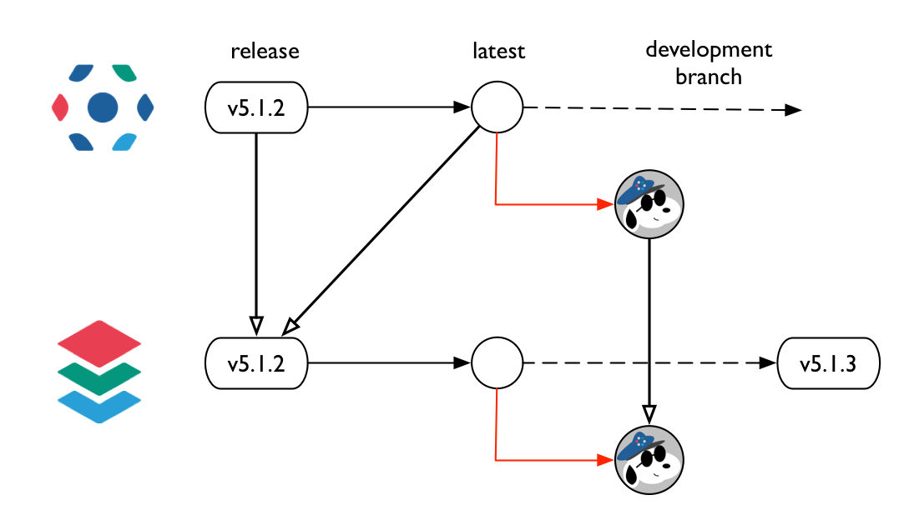
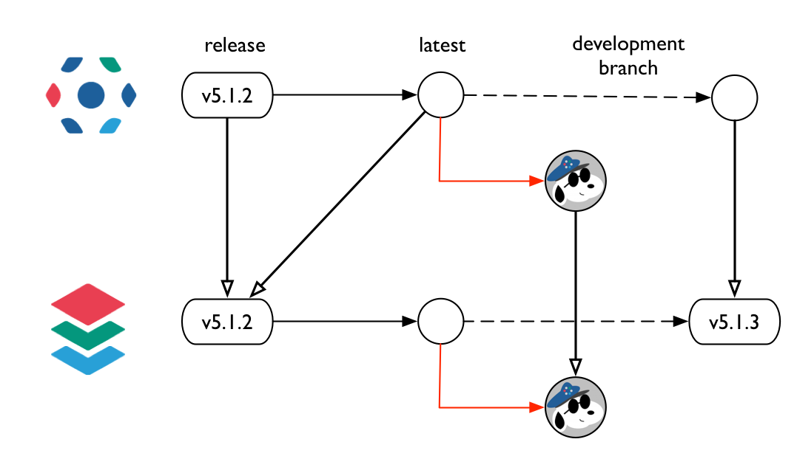
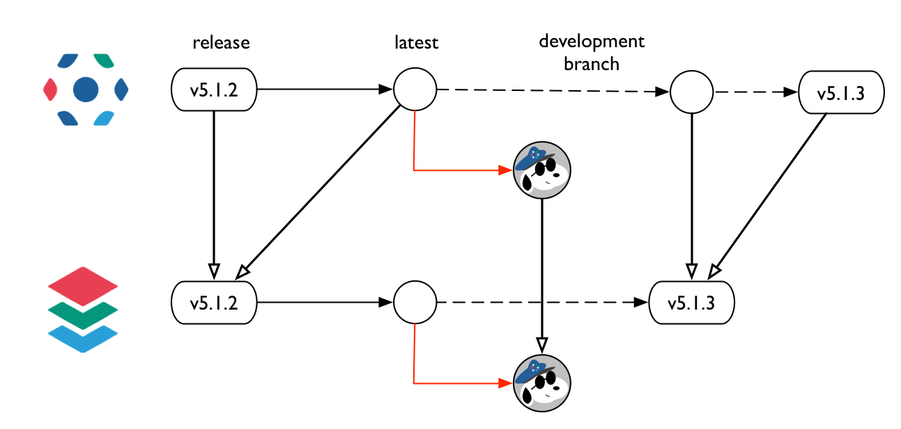
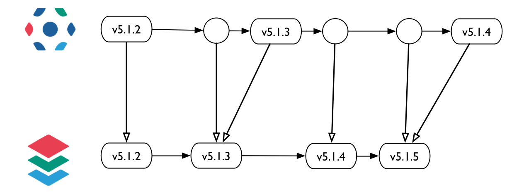

Bio-Formats
decoupling
OME Tuesday meeting
7th July 2015
Sébastien Besson

Presentation Outline
- The problem
- Decoupling checklist
- Bio-Formats build decoupling
- Future work
The problem
- OMERO managed as a monolithic project
- Components (Bio-Formats, server, web, insight)
- all embedded in the same top-level source code
- built together
- released simultaneously
The problem
Example 1: Bio-Formats
- Bug reported for a file format
- Bug fix
- Pull Request opened to fix the bug
- Pull Request tested via workflow
- Pull Request merged into the development line
- Bio-Formats release cannot happen until OMERO is ready to be released
The problem
Example 2: OMERO
- OMERO is released
- Security vulnerability/build problem is reported for OMERO
- Bug fix
- Pull Request opened to fix the bug
- Pull Request tested via workflow
- Pull Request merged into the development line
- OMERO is re-released with Bio-Formats version number artificially bumped
Decoupling checklist
- Continuous Integration
- Source code repository
- Build system
- CI server/jobs
- Deployment
- Documentation
- Release
Bio-Formats decoupling
Source code repository (5.1.2)
- Bio-Formats has its own source code repository
- OMERO source code embeds Bio-Formats via a submodule - see 1d12ad1f
- Bio-Formats is referenced by its revision via the submodule SHA1
Bio-Formats decoupling
Build system (5.1.2)
- Bio-Formats built as part of the OMERO
build system - see build.xml
build.xml
<target name="dist"> <ant target="tools"> ... - Dependency management defined in Bio-Formats - see ivy.xml
ivy.xml
<publications defaultconf="build,runtime"> <artifact name="formats-gpl"/> ... <dependencies defaultconfmapping="build,runtime->default"> <dependency org="bf-deps" name="xalan" rev="2.7.1"/>
Bio-Formats decoupling
Source code
See Bio-Formats build decoupling PR- Bio-Formats submodule removed - see 80925d60
- Bio-Formats declared as another OMERO
dependency in omero.properties
omero.properties
versions.bioformats=5.1.2 - Once PR is merged, the content of components/bioformats needs to be cleared manually
Bio-Formats decoupling
Build system
See Bio-Formats build decoupling PR- Bio-Formats publish its artifacts to the OME artifactory
- OMERO build system consumes Bio-Formats artifacts via Ivy
- Ivy configuration file modified to resolve OME artifactory dependencies transitively
- Bio-Formats dependencies resolved in
individual components (model, server) via
ivy.xml
<dependency org="ome" name="formats-bsd" rev="${versions.bioformats}"/>
Bio-Formats decoupling
Continuous integration (5.1.2)
Bio-Formats decoupling
Continuous integration (5.1.2)
Bio-Formats decoupling
Continuous integration (5.1.2)
Bio-Formats decoupling
Continuous integration (5.1.2)
Bio-Formats decoupling
Continuous integration
Bio-Formats decoupling
Continuous integration
Bio-Formats decoupling
Continuous integration
Bio-Formats decoupling
Continuous integration
Bio-Formats decoupling
Continuous integration
Bio-Formats decoupling
Continuous integration
Future work
- 5.1.3 Release
- Bio-Formats 5.1.3 (July 20th)
- OMERO 5.1.3 (July 31th)
- Version decoupling
 Requires background work on registry application to handle versioning of different components
Thank you